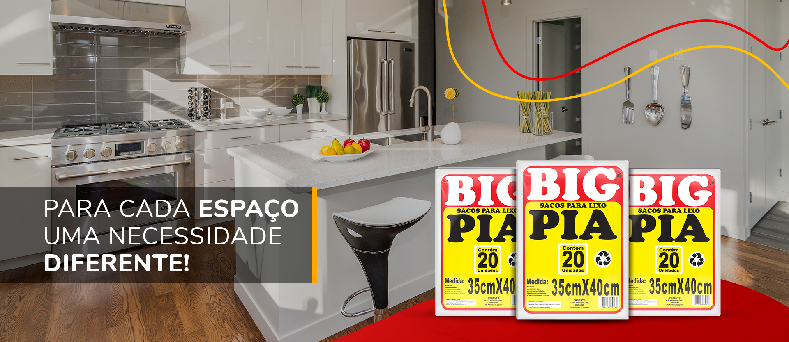
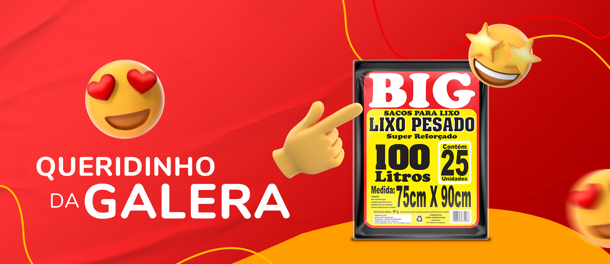

Uma linha de soluções para sacos de lixo, tanto para ambientes internos quanto externos. Uma empresa genuinamente goiana há mais de 22 anos levando produtos sustentáveis para a sua casa. Escolha os sacos de lixo de sua preferência 15L, 20L, 30L, 50L, 60L, 100L ou 200L. Uma opção inteligente e acessível com desempenho e eficiência para cuidar mais de você!

O saco para lixo de 100L é o que mais tem saído em nossa fábrica. Com capacidade de 20kg e tamanho similar a grande maioria dos outros sacos de 150L, ele tem subido cada vez mais na preferência dos consumidores que compararam as diferenças.